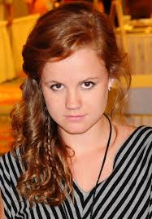

|
Hunter May |
| Génie en informatique |
| Vivant mais handicapé |
 |
Dale "Barbie" Barbara |
| Fils de Don Barbara et frère de Mélanie Cross, fiancé de Julia Shumway |
| Ancien militaire reconverti en "mercenaire" |
| Vivant à la fin de la série |
|  |
Eleanor "Norie" Calvert-Hill |
| Fille de Alice Calvert et Carolyn Hill |
| Lycéenne |
| Vivante |
|
James "Junior" Rennie |
| Fils de Big Jim Rennie |
| Etudiant et Policier pendant la série |
| Décédé |
|
Angela "Angie" McAlister |
| Soeur de Joe McAlister |
| Serveuse |
| Décédée |
 |
Joe McAlister |
| Frère de Angie McAlister |
| Lycéen |
| Vivant |
|
Julia Shumway |
| Mariée à Peter Shumway décédé, et fiancée à Dale Barbare |
| Journaliste |
| vivante à la fin de la série |
 |
Mélanie Cross |
| Fille de Don Barbara et soeur de Dale Barbara |
| Première personne ayant touché "l'oeuf", et étant déclarée morte à la suite |
| Décédée pour une seconde fois |
|
Sam Verdreaux |
| Frère de Pauline Rennie et oncle de James |
| ancien ambulancier urgentiste |
| Décédé |
 |
James "Big Jim" Rennie |
| Père de Junior |
| Conseiller municipal |
| Vivant a la fin de la série |